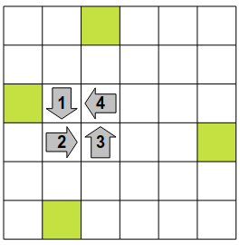

Lösning
Kollisionen mellan robot 1 och robot 2 kan bara ske där deras vägar korsas.

Man börjar med att föra robot 2 till kollisionsplatsen. Sedan stegar man fram robot 1 tills den kör in i robot 2.
För att lösa uppgiften kan man alltså successivt trycka på knapparna: 2, 2, 1, 1, 1, 1, 1.
Om man för robot 2 till kollisionsplatsen mellan robotarna och sedan för dit robot 1 kommer denna att blockeras av robot 2 och vägra flytta sig. Instruktionen i steg 1 säger att om det finns en robot framför ska man gå till steg 3, som säger att man ska gå tillbaka till steg 1, i en oändlig loop.
Man måste alltså göra på något annat sätt. Man för först robot 1 till rutan innan kollisionsplatsen. Man utför instruktionen i steg 1 innan robot 1 har något framför sig. På så sätt är robot 1 färdig att utföra steg 2, dvs ta ett steg framåt, utan att fråga efter något villkor.
Man kan sedan föra robot 2 till kollisionsplatsen och så till sist utföra steg 2 för robot 1 så att den kör in i robot 2.
En lösning är alltså att successivt klicka på knapparna: 1, 1, 1, 1, 1, 1, 1, 2, 2, 2, 2, 2, 1.
För att komma till ett låst läge måste man föra alla robotarna till en position precis innan de blockeras av varandra, samt ha alla vid programsteg 2.
Genom att uföra en korrekt serie steg för varje robot för sig, kan man nå följande läge :
Därefter är det bara att utföra ett ytterligare steg 2 för var och en av robotarna, vilket ger följande helt låsta läge.

Lösningen är alltså att successivt klicka på knapparna: 1, 1, 1, 1, 2, 3, 3, 3, 3, 4, 4, 4, 4, 4, 4, 4, 1, 2, 3, 4.
Det är datavetenskap!